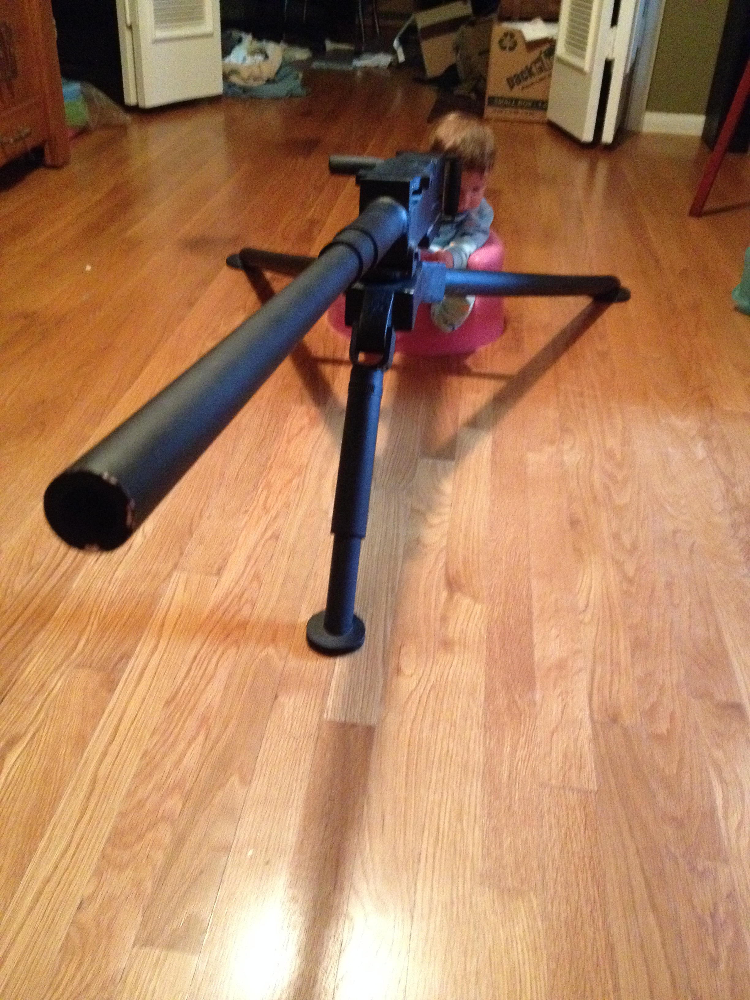

Mike Herring
Beginner Front End Webperson
Wednesday August 12th, 2015
Today in class we learned about bootstrap and reviewed CSS. I had played around a bit with bootstrap before but it was not much. I found today's lesson quite informative and useful. Often it is the little things, like the off handed comment about coolors.co, which looks like a wonderful site to find matching colors which is something I am dreadfully horrible at. I love going to visit other people's workshops when I travel and see how they do whatever it is they do, what tools they use, how they have things set up and organized, as I can always pick up some little tidbit that will help me do my stuff better, or maybe I'll remember it when a problem comes up or something. Same thing here, it's nice to see the tools and processess that our instructors use.
Tuesday August 11th, 2015
Today in class we learned about CSS and JAVAScript. I had to leave as soon as class was over because Tristan, our 16 month old son, had pooped too much at daycare and they thought he was sick. Apparently if you poop more than three times you have to go home. Never heard of that before, but I can see how it would cause concern. :) I spent most of the afternoon playing with him, so it was not all bad. Then we went to the doctor at five and they said he was fine, probably it was just a reaction to traveling all over last week. Or possibly he picked up a bug at daycare yesterday. My mom is coming over in a bit so that she can watch him tomorrow morning, it's easier for her to drive over tonight and stay in the guest room than try to fight traffic at 7am. She lives on the west side of Fort Worth and we live in the south side of Dallas.
Monday August 10th, 2015
Here is a picture of me and Tristan taken a few weeks ago:

Sunday, August 9, 2015
Here is a picture of Tristan manning our (fake/replica) M2 .50 BMG Machine Gun :) :

Here is a picture of Tristan eating rather messily, although he has been much, much messier! :
Here is a picture of Tristan in his frog jumper thing:

Make sure you click on the above link, it's fascinating!